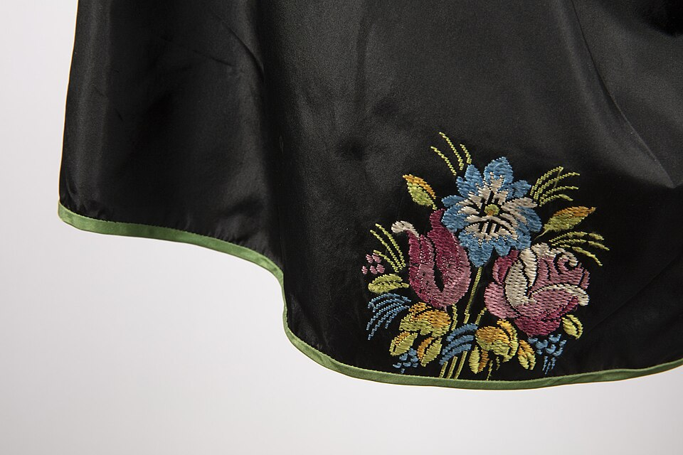
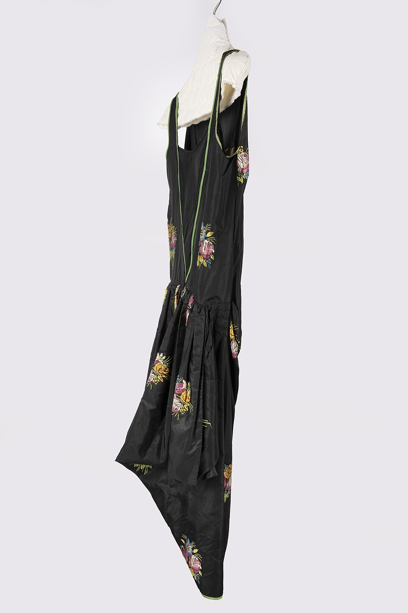
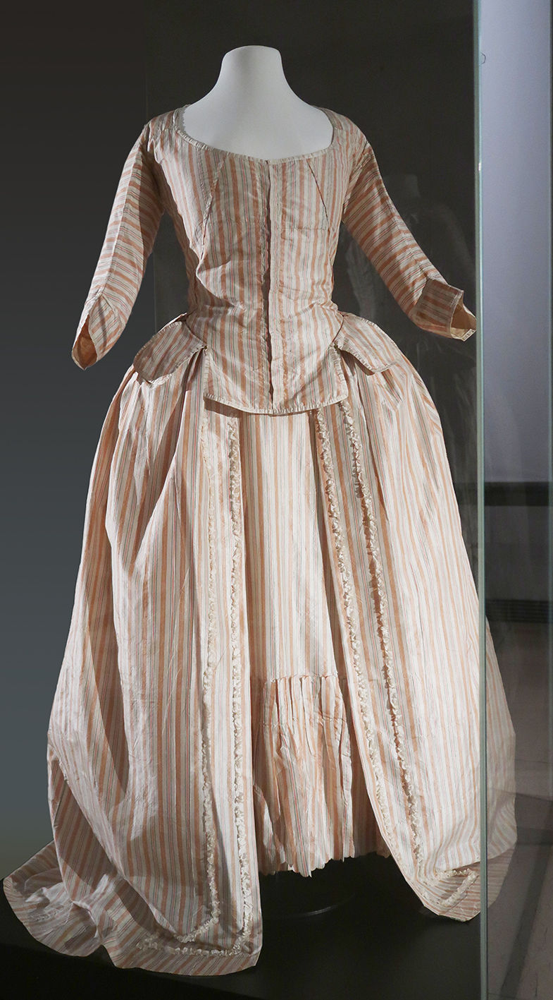

Textile Monograph Index
Scholarly Treatises on Haute Couture Taffeta
In-depth research papers authored by our resident textile physicists, dress historians, and master weavers on the material science and structural mechanics of fine silk.

Treatise 01
The Physics of Silk Scroop: Acoustic Resonance in Fibroin Filaments
A rigorous investigation into acid-treatment crystallography, triangular prism filament geometry, and acoustic frequency generation during textile movement.
1,420 words • Peer Reviewed • 181 Mercer St
Read Full Treatise →

Treatise 02
Optical Chromatics of Changeable Shot Weaves: Two-Tone Refraction
An exhaustive optical study analyzing orthogonal warp-weft chromatic angles, refractive index variations in dyed silk yarns, and ambient lighting transitions.
1,390 words • Textile Optics • 181 Mercer St
Read Full Treatise →

Treatise 03
Architectural Pleat Mechanics & Flexural Memory in Couture Gowns
Engineering analysis of box pleat cantilever loft, modulus of elasticity under dry thermal pressing, and internal boning stabilization in evening dressmaking.
1,410 words • Couture Engineering • 181 Mercer St
Read Full Treatise →